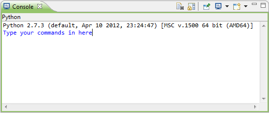
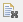
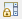
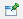
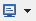
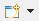

The Console View is used to execute scripts and commands in JavaScript and Python.
It will also show output from processes running in Phaedra.

Menu bar
|  |
Will clear your console. |
|  |
Will lock your view against scrolling |
|  |
Will lock the current console view from changing. E.g. If your JavaScript Console View is active and your Python Console View generates new code, the JavaScript Console View will stay the active view. |
|  |
This icon is used to change between Console Views. If you click on the triangle on the right of the icon, you can choose your view. There are 3 options:
|
|  |
Will open a new Console View |